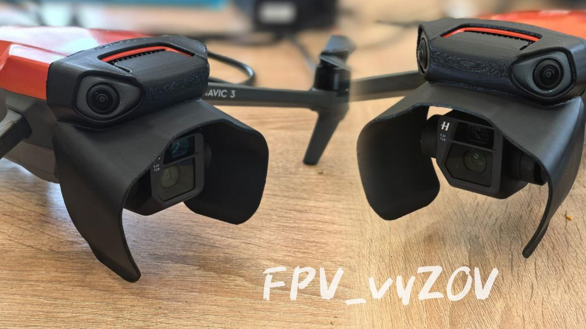
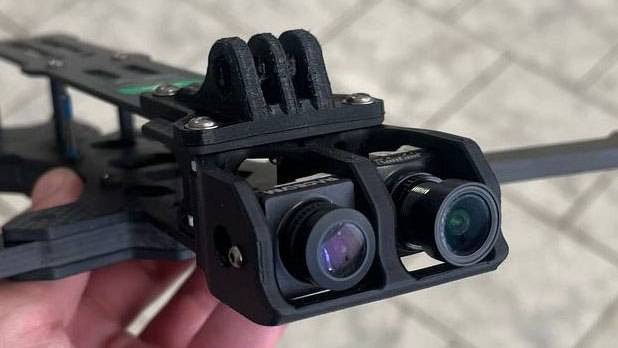
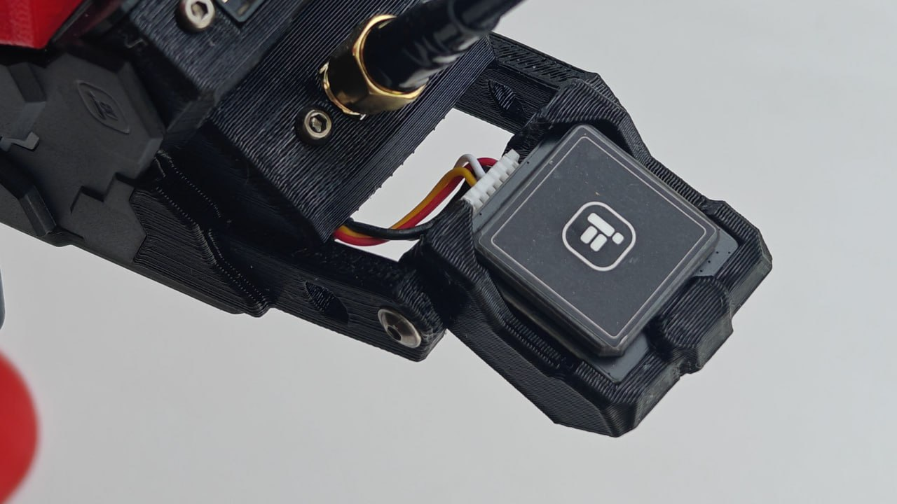
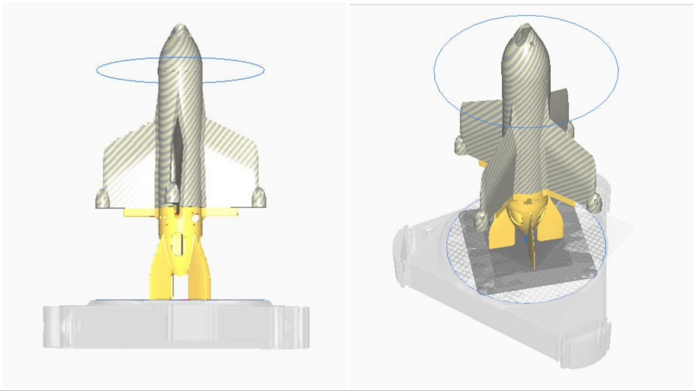
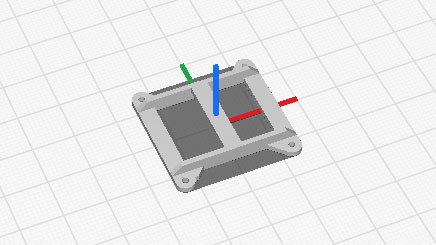
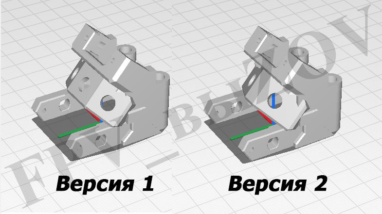

ПОДВЕС ДЛЯ М3
ℹ️ Для замены сломанных оригинальных деталей подвеса на Mavic 3, Mavic 3 Classic, М3E/3T/3M.
Выкладываем 4ре детали: пронумерованы part1, part2, part3, part4 соответственно.
Каждая деталь используется в оригинальном устройстве в составе подвеса камеры.
✔️ Апрель 2025
Доработана деталь "Мавик 3 подвес part 1":
- добавлено ребро жесткости вокруг корзины с мотором,
- улучшена жесткость передних лап.
📎
#3D_МОДЕЛИ_ДЛЯ_ДРОНОВ
#3D_МОДЕЛИ_ДЛЯ_ДРОНОВ_DJI
#DJI
Это вложение из поста t.me/platforma_fpv/248/1091
Подвес для Mavic 3 pro
.
Модель усилена в местах возможного излома.
ℹ️ Для замены сломанных оригинальных деталей подвеса на Mavic 3, Mavic 3 Classic, М3E/3T/3M.
✔️ Апрель 2025
- исправлен угол наклона спинки,
- чуть-чуть поправлены расположения отверстий в корзине для правильной установки мотора,
- поправлены внешние размеры для прохождения калибровки подвеса.
📝 Рекомендуется печатать на фотополимернике, желательно ABS-Like смолой.
#3D_МОДЕЛИ_ДЛЯ_ДРОНОВ
#3D_МОДЕЛИ_ДЛЯ_ДРОНОВ_DJI
#DJI
Это вложение из поста t.me/platforma_fpv/248/1094
Корпус для Mavic3, отсканированный.
ℹ️ Для поделок.
#3D_МОДЕЛИ_ДЛЯ_ДРОНОВ
#3D_МОДЕЛИ_ДЛЯ_ДРОНОВ_DJI
#DJI
Это вложение из поста t.me/platforma_fpv/248/1126

Держатель для АКБ DJI Mavic 3
.
Держатель для дополнительной модернизированной оригинальной АКБ DJI Mavic 3.
Ставится сверху корпуса дрона DJI Mavic 3, закрепляется с помощью ремней.
📎
#3D_МОДЕЛИ_ДЛЯ_ДРОНОВ
#3D_МОДЕЛИ_ДЛЯ_ДРОНОВ_DJI
#DJI
Это вложение из поста t.me/platforma_fpv/248/1612

Защитная бленда для DJI Mavic 3
✔️ Бленда защищает камеру дрона при транспортировке.
✔️ При использовании дрона (полеты)
защищает от попадания прямых солнечных лучей в камеру.
при поддержке
#3D_МОДЕЛИ_ДЛЯ_ДРОНОВ
#3D_МОДЕЛИ_ДЛЯ_ДРОНОВ_DJI
#DJI
Это вложение из поста t.me/platforma_fpv/248/1666

Держатель для 5-ти аккумуляторов 21700 для DJI M3,
вариант 1
.
Вариант 1 установки дополнительной АКБ на базе 5-ти аккумуляторов 21700 на DJI M3.
📎
#3D_МОДЕЛИ_ДЛЯ_ДРОНОВ
#3D_МОДЕЛИ_ДЛЯ_ДРОНОВ_DJI
#DJI
Это вложение из поста t.me/platforma_fpv/248/1539

Держатель для 5-ти аккумуляторов 21700 для DJI M3,
вариант 2
Вариант 2 установки дополнительной АКБ на базе 5-ти аккумуляторов 21700 на DJI M3.
📎
#3D_МОДЕЛИ_ДЛЯ_ДРОНОВ
#3D_МОДЕЛИ_ДЛЯ_ДРОНОВ_DJI
#DJI
Это вложение из поста t.me/platforma_fpv/248/1540

Чехол (кейс) для транспортировки и хранения DJI Mavic 3
.
✔️Подходит для дронов DJI Mavic 3/ 3 Classic/ 3 Cine/ 3Т/ 3Е
⚠️ Не подходит для DJI Mavic 3 Pro
Защищает камеру и пропеллеры при транспортировке (в отличие от оригинального чехла, который закрывает только подвес).
📎
Еще будет полезно
#3D_МОДЕЛИ_ДЛЯ_ДРОНОВ
#3D_МОДЕЛИ_ДЛЯ_ДРОНОВ_DJI
#DJI
Это вложение из поста t.me/platforma_fpv/248/1566

Чехол (кейс) для транспортировки и хранения DJI Mavic 3 всей серии.
✔️ Подходит для дронов DJI Mavic 3/ 3 Classic/ 3 Cine/ 3Т/ 3Е/
3PRO
ℹ️ Кейс доработан для размещения всей 3й серии DJI (в том числе m3 pro), внутренний объем увеличен, масса и внешние габариты изделия снижены, корпус имеет плавные обводы, направляющие крышки не выступают за габарит основного корпуса.
Данный чехол защищает камеру и пропеллеры при транспортировке (в отличие от оригинального чехла, который закрывает только подвес).
📎
Еще будет полезно
при поддержке
#3D_МОДЕЛИ_ДЛЯ_ДРОНОВ
#3D_МОДЕЛИ_ДЛЯ_ДРОНОВ_DJI
#DJI
Это вложение из поста t.me/platforma_fpv/248/1684

Кейс для АКБ (М3 всей серии).
Удобен для хранения и
переноски в рюкзаке
аккумуляторной батареи для DJI М3 (всей 3й серии).
Кейс будет особенно актуален
в дождь.
Еще будет полезно:
при поддержке
#3Д_для_периферийных_устройств
#АКБ
#DJI
#техник_бпла
Это вложение из поста t.me/platforma_fpv/250/1691

Камера поворотная на fpv-дрон iFlight Chimera 5", 7,5”, 9” 10".
Дает дополнительный обзор.
📝 Вам понадобятся:
1. Макеты для 3D-печати;
- Крепление на корпус.stl – 1 шт.;
- Ухо в крепление камеры.stl – 2 шт.;
- Шестерня на камеру.stl – 1 шт.;
- Шестерня на серву.stl - шт.;
2. Сервопривод MG90S, 180⁰ - 1 шт.;
3. Винт М3х8 – 2 шт.
📎
ℹ️ На видео пример одной из настроек поворота камеры (3 положения). Можно увеличить количество шагов и пр. - под свои задачи, камеру и т.п.
#3D_МОДЕЛИ_ДЛЯ_ДРОНОВ
#камера
Это вложение из поста t.me/platforma_fpv/248/1524

Крепления для установки камер на дрон iFlight Chimera.
Подходит для дронов iFlight Chimera 7,5", 9" и 10".
Устанавливаются на штатные посадочные места.
Нужно если:
- сломано оригинальное крепление;
- необходимо установить камеру другого форма-фактора - "мини" (родной формат - "микро");
- необходимо установить две камеры формата "микро",
например обычную и ночную (как на фото).
Крепление печатается из PLA-пластика.
📎
#3D_МОДЕЛИ_ДЛЯ_ДРОНОВ
#камера
Это вложение из поста t.me/platforma_fpv/248/1601

Заглушка для USB-разъема type-С и крышка для камеры.
ℹ️ Правильное хранение и транспортировка дрона - залог надежности и исправности оборудования.
⚡️Чтобы грязь и влага не попадала в USB-разъем полетного контроллера, его необходимо закрывать, используйте для этого "
Заглушку USB
".
⚡️Для того, чтобы картинка была хорошей и четкой нужно защищать камеру - для предотвращения царапин на линзе объектива и прочих механических повреждений закрывайте камеру "
Крышкой для камеры
Рекомендации по печати:
- рекомендуется печатать из
TPU-пластика
#3D_МОДЕЛИ_ДЛЯ_ДРОНОВ
Это вложение из поста t.me/platforma_fpv/248/1517

Держатель для GPS-модуля
.
Держатель для GPS-модуля на дрон iFlight Chimera (7,5", 9" и 10").
ℹ️ GPS-модуль позволяет: определять координаты дрона, его скорость, направление движения, а также использовать режим Failsafe "GPS-спасение".
📎
Рекомендации по печати:
- рекомендуется печатать из TPU-пластика.
#3D_МОДЕЛИ_ДЛЯ_ДРОНОВ
#gps
Это вложение из поста t.me/platforma_fpv/248/1518

Держатель для GPS-трекера
.
Держатель для
.
* использовался для iFlight Chimera (7,5", 9" и 10").
⚡️Использование GPS-трекеров - отличное решение для школ БЛА и тестовых полетов на дальность.
ℹ️ Рекомендации по печати:
- рекомендуется печатать из TPU-пластика,
- можно печатать из PLA, но такой вариант выходит более хрупким и про падении большая вероятность того, что держатель сломается.
📎
#3D_МОДЕЛИ_ДЛЯ_ДРОНОВ
#gps_трекер
Это вложение из поста t.me/platforma_fpv/248/1519
Хвостовик под передатчик 1,2 для Химеры
Держатель для видепередатчика 1,2ГГц (золотой) для дрона Chimera 7,5 Pro/9.
❔Когда нет 3Д-принтера - пилоты
для установки видеопередатчика.
#3Д_для_периферийных_устройств
Это вложение из поста t.me/platforma_fpv/250/1205

Дрон «Архангел», с вертикальным взлетом.
Модель для печати на 3Д принтере.
📎
Для самостоятельной сборки понадобятся:
- Филомент Bambulab Filament PLA-CF
- Принтер Bambulab X1Carbon
- Brotherhobby Avenger 2816 1050
- HQ Prop 7*12*2
- Caddx Ratel PRO FPV камера 1500TVL
- GEPRC MATEN 1.2G 5W VTX PRO
- GEPRC SOMA 1.2G/1.3G антенна для дрона
- SpeedyBee F4 F405 V4 60A BLS 30x30 Stack FC Drone
- Аккумулятор GNB 6000 Mah LiHv
- Болты М3x20
- Болты М3x8
- Связь Гермес, Гагаринг или аналоги
- Провода
📝
Разработано
#3D_МОДЕЛИ_ДЛЯ_ДРОНОВ
#FPV
Это вложение из поста t.me/platforma_fpv/248/1560

Держатель антенны управления, с установкой на луч для дрона iFlight Chimera
Подходит для дронов iFlight Chimera 7,5" и 9" (рамы Dead Cat).
Устанавливается на луч, под мотор, вместо защиты.
Нужно, чтобы вынести антенну управления подальше от корпуса, для улучшения качества связи.
Рекомендуется печатать из жесткого пластика, например PLA или PETG.
📎
#3D_МОДЕЛИ_ДЛЯ_ДРОНОВ
Это вложение из поста t.me/platforma_fpv/248/1603

Держатель для приемника управления
Держатель для приемника управления с посадочным размером 20х20 мм, служит для закрепления приемника в корпусе дрона.
Рекомендуется печатать из TPU-пластика.
📎
#3D_МОДЕЛИ_ДЛЯ_ДРОНОВ
Это вложение из поста t.me/platforma_fpv/248/1605

Хвостовик для дрона iFlight Chimera
Подходит для дронов iFlight Chimera 7,5", 9" и 10".
Хвостовик имеет места для установки (крепления):
- разъема питания (XT60E-M),
- антенны видеопередатчика,
- антенны управления,
-
.
Рекомендуется печатать из TPU-пластика.
📎
Различия между версиями:
-
версия 1
, универсальная, подходит для цифровых и аналоговых видеосистем, для этого имеет 3 отверстия для установки видео антенн, центральное (для аналоговой) и два по краям, с углом 45° (для цифровой);
-
версия 2
, подходит для цифровых видеосистем, имеет всего два отверстия для установки видео антенн под углом 45°.
#3D_МОДЕЛИ_ДЛЯ_ДРОНОВ
Это вложение из поста t.me/platforma_fpv/248/1608
#3Д_для_периферийных_устройств
Детали для периферии
от Команды FPV_vyZOV;
-
(медицина, для мастерской и т.п.)
➤
Полезные ПО для 3Д специалиста
Невозможно отобразить содержимое https://t.me/platforma_fpv/1346/1450
Это вложение из поста t.me/platforma_fpv/250/975

Fast STL Viewer
ℹ️Приложение для мобильного - просматривать STL-файлы.
📎
(версия 2.19)
#программное_обеспечение
#для_android
Это вложение из поста t.me/platforma_fpv/16/1017
#3D_МОДЕЛИ_ДЛЯ_ДРОНОВ
➤ 3D модели для DJI
- Держатель для 5-ти аккумуляторов 21700 для DJI M3
➤ 3D модели для FPV
(АКБ, РЭБ, пульты и пр.)
Полезные ПО для 3Д специалиста
Невозможно отобразить содержимое https://t.me/platforma_fpv/1346/1450
Веб-страница создана автоматически на основе поста пользователя ПЛАТФОРМА_FPV